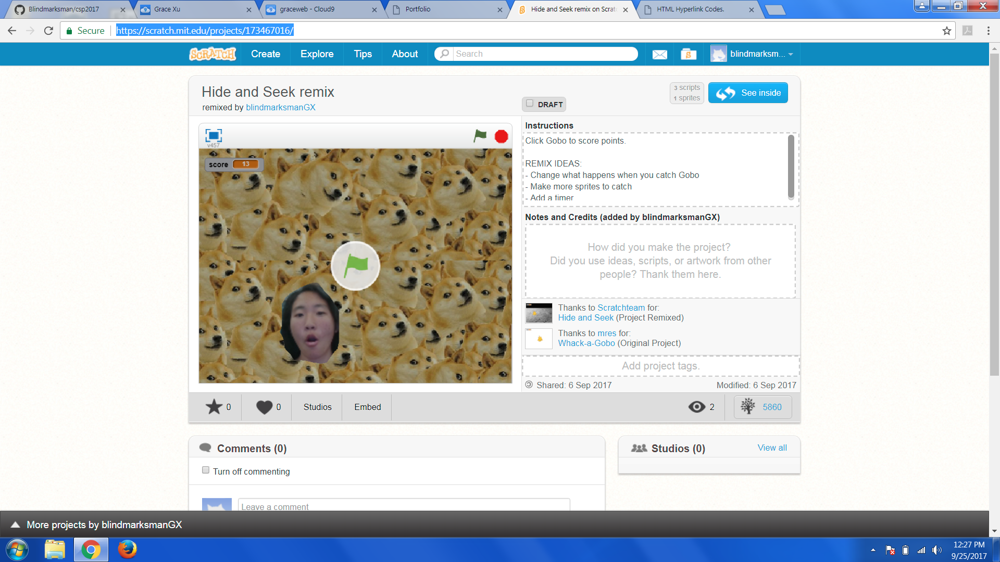
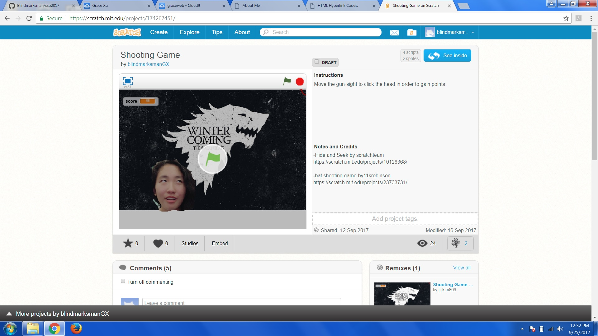
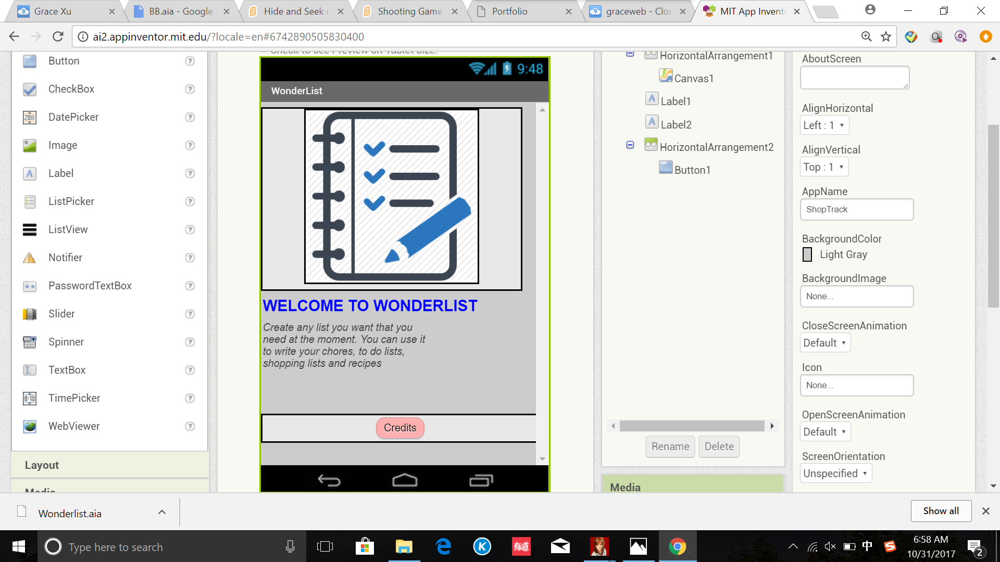
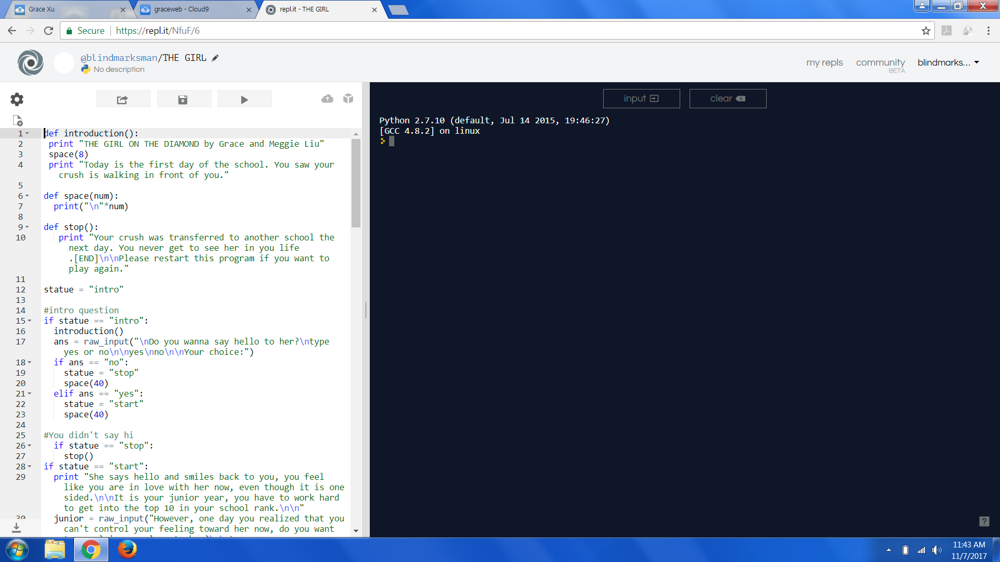
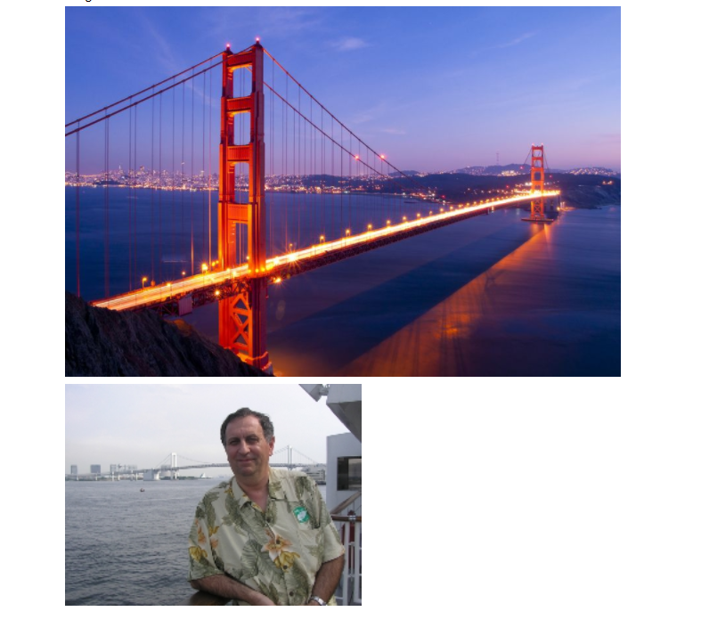
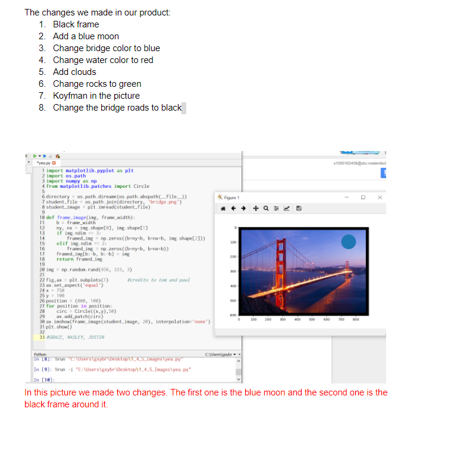
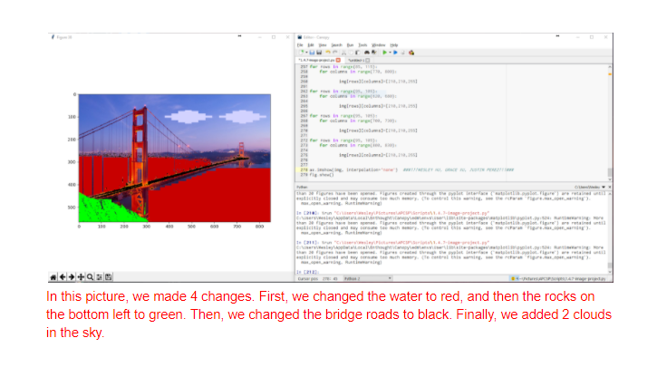
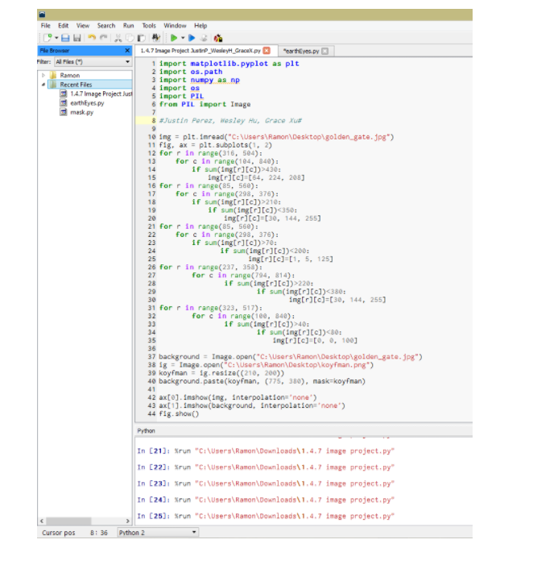
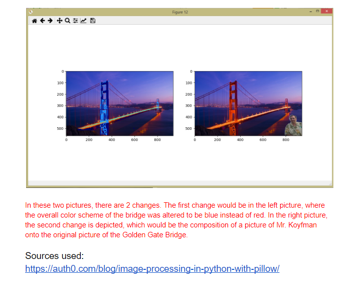

http://scratch.mit.edu/projects/173467016/
My partner and I made a hide and seek game for our project
As you click on the sprite, it will make a sound effect and disappear and reappear in a
random spot, every time when you click it, it will add one point to the overall score.

http://scratch.mit.edu/projects/174267451/
My partner and I made a shooting game by using scratch.
As you are using the sight to shoot the face, the face will move and slide randomly.
When you click it, it will add one point to the overall score.
Every time when you click it, it will disappear and reappear on a random spot.
When you reach ten points the sprite will say"you win".

http://ai2.appinventor.mit.edu/?galleryId=5715839833341952
My partner and I made a made a shopping list and to do list for the user to record their daily events and items need to purchase.
By clicking the picture, you can pick shopping list or to do list by clicking the picture.
For shopping list, you can create a list of items you need to purchase, theres also a check box next to every row.
You can also delete the item by simply clicking the row.
For to do list, you just have to click the textbox and write in the events you need to accomplish today.

http://repl.it/@blindmarksman/THE-GIRL
Me and my partner made a story about a boy who was in love with his crush.
According to your decision, you might end up never see her again in your life, or a different ending.





p>Me and my partner made 8 changes on the golden bridge.We first created a black frame around the picture, and we also add a blue moon on top of the picture.
p>Additionally, we changed the color of the water to red, the mountain to green, the lights to black, and the cloud to white.Then we changed the bridge to blue, and we also put a picture of Mr.Koyfman on the bottom right.